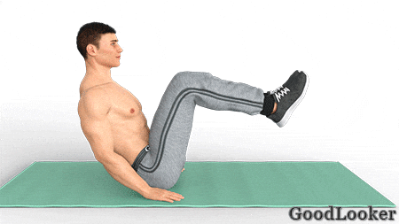

Находясь в положении лежа на животе, подогните ноги и зафиксируйте их на стопе. Руки сведены за головой с развернутыми друг от друга локтями. Поднимите верхнюю часть корпуса, стараясь не отрывать поясницу от пола. Элемент тренировки для похудения мужчинам активизирует исключительно мышцы пресса, заставляя их расти и становиться рельефнее. Классическое упражнение для избавления от живота.
Сколько выполнять: 15 повторений.
Не меняя положения предыдущего упражнения, положите руки вдоль туловища и упритесь ладонями в гимнастический коврик. Поднимите согнутые в колене ноги так, чтобы бедро оказалось перпендикулярно корпусу. После этого начинайте поднимать колени до уровня груди, полагаясь только на силу брюшной мускулатуры. Поясница отрывается от пола. Это упражнение концентрирует нагрузку в нижней части пресса.
Сколько выполнять: 15 повторений.
Встаньте на четвереньки. Напрягите пресс и спину, после чего вытяните вдоль туловища правую руку и левую ногу. Далее следует небольшая пауза, после чего конечности возвращаются обратно. Новое повторение сопровождается сменой сторон, начинают работать левая рука и правая нога. Спешить не нужно, дабы не потерять баланса туловища. Нагрузка приходится на пресс и поясницу, что не только помогает подтянуть живот, но и здорово подготавливает атлета к занятиям с дополнительными весами.
Сколько выполнять: по 10 подъемов на каждую сторону (всего 20).
Приняв упор лежа, отведите левое колено в сторону к левому локтю. Сделайте маленькую паузу, вернитесь в планку и затем подтяните левое колено по диагонали к правому локтю. Это супер-эффективное упражнение для похудения в животе направлено на развитие косых мышц, а также избавления от боковых жировых отложений. Целый подход выполняйте на одну ногу, затем поменяйте сторону.
Сколько выполнять: 10 повторений (20 подтягиваний колена) сначала на одну сторону, потом на другую.
Примите уже известную позицию лежа на животе со сведенными на затылке руками. Ноги вытянуты вдоль и приподняты от пола на 10-15 см. Далее подтяните правое колено к уровню груди, одновременно касаясь его левым локтем. Получается своеобразное скручивание. Возвращая правую ногу на место, подтягивайте левое колено и коснитесь его правым локтем. Подобные движения выполняются в среднем темпе, помогая атлету качественно проработать рельеф пресса.
Сколько выполнять: по 15 подтягиваний колена на каждую сторону (всего 30).

Оставайтесь лежать на спине, согните ноги и поставьте их на полную стопу, слегка расставив в разные стороны. Руки скрестите на груди и удерживайте на протяжении всей работы. Суть упражнения на пресс заключается в том, чтобы поднять корпус за счет силы пресса и коснуться предплечьями области колен. Это классический элемент, помогающий не только похудеть в животе мужчине, но и сделать пресс более объемным и рельефным.
Сколько выполнять: 15 повторений.

Лежа на животе, выпрямите руки вдоль туловища и прижмите их к бокам. Ваша задача — одновременно поднимать от пола ноги и сам корпус, удерживая баланс на животе. В пиковой точке необходимо делать маленькие паузы, дабы сконцентрировать и усилить нагрузку. В ходе работе развивается верхняя часть пресса, поясница и задняя поверхность бедра, что позволяет в комплексе укрепить мускулатуру тела.
Сколько выполнять: 15 повторений.
Примите положение боковой планки, перенося вес туловища на предплечье и носки. Свободная рука зафиксирована на поясе. В начале таз находится на полу. Затем поднимите его вверх, активизировав боковые и косые мышцы брюшной области. В каждом пике делайте маленькие паузы, дабы сосредоточить нагрузку в мышцах. Двигайтесь плавно, не бросая таз обратно на пол. Благодаря боковой планке мышцы кора становятся сильнее, объемнее и рельефнее. Целый подход выполняйте на одну ногу, затем поменяйте сторону.
Сколько выполнять: 15 повторений сначала на одну сторону, потом на другую.
Упражнение для похудения в животе выполняется сидя на ягодицах. Вы удерживаете баланс туловища за счет этих мышц. В стартовой фазе корпус отклонен назад, а ноги подняты под углом в 45 градусов с полом. Руки расставлены по бокам, становясь дополнительными точками опоры. Ваша задача — сводить корпус и колени в центральной точке, после чего разгибаться обратно. Поскольку туловище и конечности удерживаются на весу, упражнение оказывает статическую и динамическую нагрузку на пресс одновременно, за счет чего в разы возрастает эффективность элемента.
Сколько выполнять: 15 повторений.

Лягте спиной на пол и раскиньте руки в стороны, приняв Т-образную позу. Далее поднимите правую ногу вверх и вытяните ее. Одновременно с этим дотрагивайтесь до носка левой рукой, полагаясь на силу брюшной мускулатуры. Вернитесь в исходную фазу. Это упражнение дает комплексную нагрузку на мышцы живота, но основной акцент приходится на косые мышцы. Целый подход выполняйте на одну ногу, затем поменяйте сторону.
Сколько выполнять: 15 повторений сначала на одну сторону, потом на другую.
Сядьте на пол, подогните ноги и упритесь стопами в пол. Корпус отклоните на 45 градусов назад, после чего вытяните руки над головой. Ваша задача — поочередно подтягивать колени к груди в принятом положении, одновременно опуская на них руки. Работа ведется в среднем темпе. За счет движения ног нагрузка на пресс становится значительно выше, что помогает быстро похудеть в животе мужчине. Несложное упражнение сочетает в себе как динамическую, так и статическую нагрузку.
Сколько выполнять: по 15 подтягиваний колена на каждую сторону (всего 30).
Движение ведется из позиции стандартной планки на локтя. Поворачивая таз, старайтесь коснуться его боковой частью пола. Верх корпуса при этом остается абсолютно неподвижным. Сделав маленькую паузу, верните таз обратно, после чего проделайте аналогичное движение в противоположном направлении. В течение всей работы брюшная мускулатура находится в постоянном напряжении, а повороты таза оказывают акцентированную нагрузку на боковые части и косые мышцы.
Сколько выполнять: по 10 поворотов на каждую сторону (всего 20).
Не забудьте повторить упражнения в 2 круга.